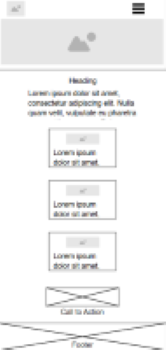
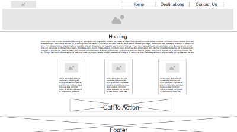

Site Name
Wonders Of South America — this name reflects the purpose of the site: showcasing the most iconic destinations across South America.
Site Purpose
To inform and inspire travelers by presenting visually engaging and informative content about South America's top tourist attractions — including natural landscapes, cultural landmarks, and adventurous destinations.
Scenarios
- What are the most breathtaking natural landscapes in South America?
- Where can I explore historical sites with cultural significance in the region?
- Which places offer adventure travel opportunities like hiking, biking, or exploration?
Color Scheme
- Primary Color: #1a4f3f (forest green for nature and stability)
- Secondary Color: #e0f2f1 (light teal for calm background contrast)
- Accent Color: #fbc02d (vibrant yellow for highlights and call-to-action)
- Text Color: #212121 (deep grey for high readability)
- Background: #ffffff (clean white for body background)
Typography
The site uses the sans-serif font "Segoe UI" for a clean, modern, and legible appearance.
Wireframes
Home Page Wireframe
The home page includes a header with navigation and a hero image, followed by an introduction, a three-column section for types of travel experiences, a quote section, and a final call to action.
 